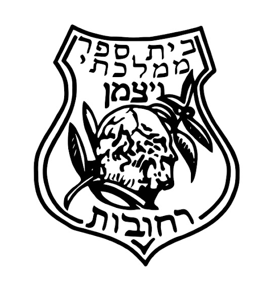

כיתה ד' – תשפ"ז
להלן רשימת ספרי הלימוד והציוד הנדרש לשנה"ל תשפ"ז. חובה לעטוף כל ספר וחוברת ולשמור על מצבם ראוי ללמידה.
📚 ציוד
| מקצוע | חומרי למידה | מחבר / הוצאה | מחיר מרבי |
|---|---|---|---|
| חינוך לשוני | מקראה "עולמות" | מט"ח | 36.30 ש"ח |
| תנ"ך | ספר תנ"ך מלא – רכישה אישית | — | — |
| מולדת (דיגיטאלי) | "יחד בישראל" – ספר דיגיטאלי, יירכש ע"י ביה"ס | מט"ח | — |
| אנגלית | English Adventure Legendary (חוברת לא מוחזרת בתום השנה) | — | 63 ש"ח |
| מדע וטכנולוגיה | "במבט חדש" – מדע וטכנולוגיה (מוחזר לביה"ס בתום השנה) | אונ' ת"א, הוצאת רמות | 43.19 ש"ח / ₪144 |
| מתמטיקה | השבחה – מספרים בתחום המיליון, כפל וחילוק, שברים פשוטים, גאומטריה, ערכת אביזרים | אונ' בר אילן | 35 ש"ח (ערכת אביזרים) |
| חינוך גופני | חוברות לא מוחזרות בתום השנה; חולצה חלקה בצבע כחול/תכלת עם סמל בי"ס "ויצמן" | — | — |
תלמידים שהצטרפו ל"פרויקט השאלת ספרים" יקבלו חוברות וספרים בהשאלה מביה"ס (למעט תנ"ך מלא). ציוד נוסף יש לרכוש עצמאית.
📓 מחברות
הרשימה תתעדכן בהמשך.
✏️ קלמר – ציוד משרדי
🍎 ציוד אישי
🎒 ציוד נוסף
- יומן לתלמיד שבועי עם תאריכים לועזי ועברי
- תיקיות לדפי עבודה – תנ"ך
- תיקיית פוליגל עם גומיה לדפי עבודה (לא מקרטון)
- קלסר דק שקוף, 5 שקיות שמרדף – מתמטיקה
- 2 מעמדים מפלסטיק לספרים (ניתן לשמור משנה שעברה)
💻 ציוד אישי למחשב
לרכוש לפי הדרישה בהמשך. יש לדאוג כי כל הציוד יהיה חתום ויישא את שם התלמיד/ה:
👕 תלבושת בית ספר
חולצות
- יש להגיע בחולצת טריקו חלקה ובעלת צבע אחיד (עם שרוול קצר או ארוך), עם סמל בית הספר בלבד.
- אורך החולצה חייב לעבור את קו המותן (אין לרכוש או ללבוש חולצות גזורות).
- אין להוסיף הדפסים נוספים על חולצת התלבושת.
- חינוך גופני: חולצה חלקה בגווני כחול עם סמל בית ספר.
- ימי שישי, חגים וטקסים: חולצה חלקה לבנה עם סמל בית ספר – חובה!

לוגו בית ספר ויצמןמכנסיים וחצאיות
- אורך המכנסיים או החצאית חייב להגיע לפחות עד אמצע הירך.
הנעלה
- ההגעה לבית הספר מותרת בנעליים או בסנדלים בלבד.
- לשיעורי חינוך גופני: חובה להגיע עם נעלי ספורט.
לבוש חורף
- ניתן להשתמש בסווטשירט חלק.
- דגש חשוב: יש לרשום את שם התלמיד/ה והכיתה על גבי התווית הפנימית של הסווטשירט (בימי החורף פריטים רבים נשכחים והולכים לאיבוד).
📌 הערות
- חובה לעטוף את המחברות והספרים.
- חובה לרשום את שם הילד על כל פריט.
- נא לרכוש מחברות עם שוליים מודגשים בצד ימין ושמאל.
- ייתכן ותידרשו לרכוש ספרים נוספים בהתאם להתקדמות הילד/ה בלימודים.